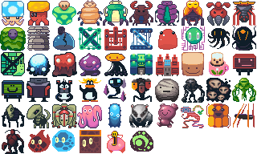
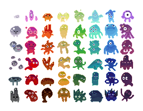
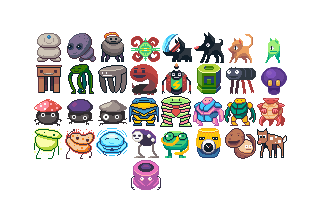

More assorted 32×32 creatures

These original sheets are useful for browsing creature shapes and concept prompts. Their four-color 32×32 rendering differs from Mossvale’s current art. They are references only: none is approved as shipped Mossvale art, and images do not define species behavior or gameplay.


